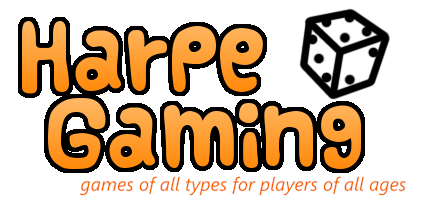

Welcome to Harpe Gaming. We have a simple philosophy. It has three main points:
- Unplug
- Interact
- Reconnect
And that's it. We believe that the best games are the ones
that bring people together through shared experiences. With
all due respect to our video gamer friends, you can't always get
that from a computer screen. Sometimes you need the
intimate approach of sitting face-to-face around
a common table with the soda and chips at your elbow.

We are a local board and card game store located in the
heart of Morgantown near the campus. We carry
hundreds of games and puzzles, including educational games, family games, card games, historical
simulations, role-playing games, and so much more.
If you remember a great game from your youth, we
probably have it in our antiques collection. If we don't, we know where we can get it.
We're more than just a place to buy games. We celebrate
gaming and the company of good friends.
Our game room is free for all to us. Sit down, pick out
a game from our demo library and start playing.
We sponsor tournaments, challenges, and special
social events. You'll always find a game to play.
We're always on the lookout for the best new games. We
publish periodic reviews of new titles. Just out
our reviews of Towers and Temples and Alliance; both
new this month at Harpe Gaming.